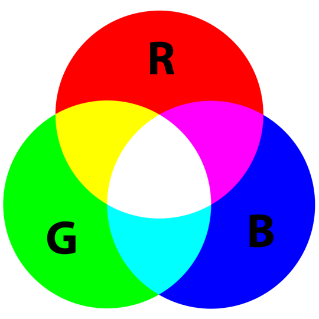

Kleuren zie je overal: op je scherm, in foto’s, of op een uitgeprint blad. Maar een computer of printer weet niet zomaar wat "rood" of "blauw" is. Daarvoor gebruiken ze kleurmodellen. Dat zijn afspraken die uitleggen hoe je kleuren maakt met cijfers. Er zijn verschillende modellen, maar de twee belangrijkste zijn: RGB en CMY(K).
Als je op een scherm kijkt, bijvoorbeeld je telefoon of laptop, dan gebruikt dat apparaat het RGB-model. Dat staat voor Rood, Groen en Blauw. Een scherm kan door het mengen van rood, groen en blauw licht heel veel verschillende kleuren maken. Hoe feller het licht, hoe lichter de kleur. Als alle drie de kleuren op volle sterkte staan, krijg je wit licht. Zet je alles op nul, dan krijg je zwart.De computer gebruikt cijfers tussen 0 en 255 om te zeggen hoeveel rood, groen of blauw er in een kleur zit. Zo kunnen miljoenen kleuren worden gemaakt. Denk bijvoorbeeld aan een mooie blauwe lucht of een knalrode auto — allemaal opgebouwd met RGB.